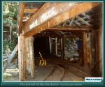
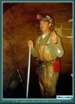
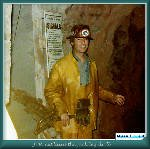
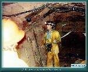
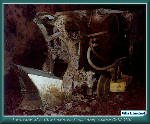
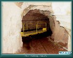
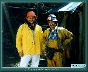
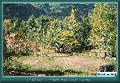

Contributed by Miles A. Lumbard
Photos by Miles A. Lumbard
| Most all the trails you can 4-wheel (and most of the ones you can't for that matter) started out as mine trails. If you've gotten up into these mountains at all, you know you can't swing a dead marmot without hittin' a mine. Now since one of the first rules of explorin' the mountains is that you never go into an old mine, you're probably chompin' at the bit to see inside one. If that's so, then the Bachelor Syracuse mine just north of Ouray is the place to scratch that itch. |
| The mine that eventually became today's Bachelor Syracuse, was originally located in the early 1890s by C. A. Armstrong, Frank Sanders, and Gerorge R. Hurlburt. The three were all unattached, and so settled on the name Bachelor for the mine. Over the years the Bachelor expanded, taking in several other adjacent claims, the Khedive, El Madi, and Old Maid. The mine produced primarily silver. The original Bachelor Tunnel is located on the opposite side of the hill from the current portal. See the Dexter Creek Trail page for details. In the 1920s, The Syracuse Tunnel was driven under the old Bachelor workings from the west. The expectation was to hit as yet undiscovered ore bodies, and provide a means to let gravity replace the pumps and hoists. The tunnel was built under the direction of George H. Beebe, and the tunnel was named The Syracuse because the majority of the capital to build it was raised in Syracuse, New York. The tunnel didn't encounter any appreciable ore veins, but it did provide an economical means to continue working the old Bachelor tunnels for a while longer. |
| These days, with the price of gold down, and the cost of getting' it outa the rock way up, the only minin' goin' on at the Bachelor is for tourist dollars. For the tour, you suit up in a yellow rainsuit, and a hardhat. While you're getting' dressed, you can check out the huge Ingersoll Rand air compressor that once powered the drills and muckers. After you're suitably attired, you'll walk out to the portal and climb on board the mine tram. You'll be ridin' 3500 feet into the solid rock of Gold Hill. |
| The mine train, or trammer, you're ridin' on is the same one miners rode on. It's pulled by a battery powered locomotive. As you board the cars, you'll be cautioned about stickin' out arms or legs from the car. It's tight in there. On the trip back into the mine, you'll pass the powder room, and the lab where ore samples would be checked. At the end of the ride, you'll get off in a fairly large chamber, and your guide will begin to explain the ways of hardrock mining. The jackleg drill, the stoper, the pattern of holes for a round, barring down the back to get rid of widowmakers, and runnin' the mucker. And then it's time to get a sense of what it was like before the advent of electric lights, or what you'd be facin' if the power went out. Your guide pulls the switch, the lights go out, the pumps stop, and you're engulfed in a blackness the likes of which you've never imagined, and a silence that is deafening, puncuated only by the eerie dripping of water. Then the lights come back on, and it's time to reboard the train for the ride back out of the hill. |
| After re-emerging from the rock, it's time for pictures with your guide, before getting' undressed, and checkin' out the gift shop or panin' for gold. As you head on to your next adventure imagine workin' for ten to twelve hours a day in a dark hole, hammerin' drill steels by hand, in the light of nothin' but a candle. It'll give you a whole lot of respect for the folks that first mined these mountains. |
|
 |
The portal of the
Bachelor Syracuse Mine (96k) |

|
 |
J. R. explains how to
drill a round (97k) |

|
 |
J. R. explains the
jack leg drill (85k) |

|
 |
J. R. shows us
how to bar down (108k) |

|
 |
A compressed air
powered mucker (93k) |

|
 |
The mine tram
(90k) |

|
 |
J. R. poses with your writer
(98k) |

|
 |
An old steam winch lurks in the weeds,
Waiting... (129k) |


|
The Narrow Gauge Circle is written, maintained,and hosted by: Mark L. Evans Send Comments to:Mark L. Evans All original materials, text, and digital images Copyright © 1996-2017 Mark L. Evans. All rights reserved. Imitation is said to be the "sincerest" form of flattery.....Please don't flatter us without permission. |